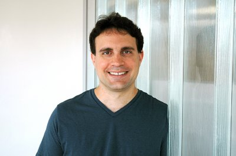
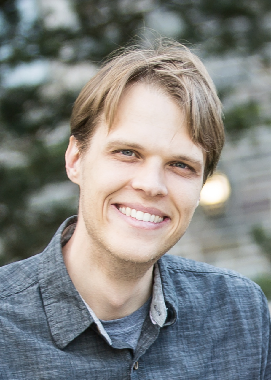
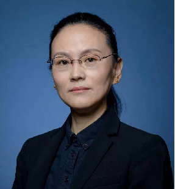
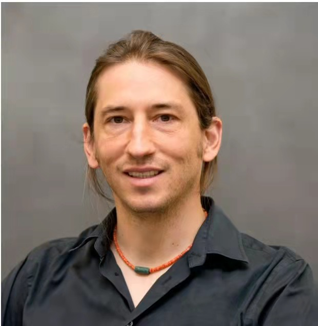

|  |
Brent WatersBiography:Dr. Brent Waters received his Ph.D. in Computer Science from Princeton University in 2004. From 2004-2005, he was a post-doctoral at Stanford University then worked at SRI as a Computer Scientist. In 2008 he joined the faculty at The University of Texas at Austin. Dr. Waters' research interests are in the areas of cryptography computer security. His work has focused on Identity-Based Cryptography, Functional Encryption, and code obfuscation. He has award and invited papers including a recent best paper at CRYPTO 2020. He is noted as a founder of Functional Encryption and Attribute-Based Encryption. Dr. Waters is a recipient of the NSF CAREER award, a Microsoft Faculty Fellow, a Sloan Research Fellowship, Packard Science and Engineering Fellowship, and Presidential Early Career Award for Scientists and Engineers (PECASE) recipient, winner of the 2015 ACM Grace Murray Hopper award and has a Simons Investigator award. Title:Chosen Ciphertext Security from Trapdoor Functions Abstract:Public key encryption is one of the fundamental pillars of cryptography and secure communication. Any encryption system that we would consider deploying or standardizing should be secure against "chosen ciphertext attacks". This gives security against an active attacker that interacts with a private key holder. While the community has been successful in developing chosen ciphertext secure systems from specific number theoretic assumptions. Relatively, little is known about constructing these systems from more general and less structured assumptions. In this talk, I'll present a a construction of chosen ciphertext secure public-key encryption from (injective) trapdoor functions. Our construction is black box and assumes no special properties (e.g. ``lossy'', ``correlated product secure'') of the trapdoor function solving a long standing open problem. The work was given the best paper award at the CRYPTO 2020 conference. |
|  |
Mark ZhandryBiography:Mark Zhandry is an assistant professor at Princeton University, currently on leave as a senior scientist at NTT Research. He was previously a postdoc at MIT, received his Ph.D. from Stanford University in 2015 and graduated with Highest Honors from UC Berkeley in 2010. He studies various aspects of theoretical cryptography, including the development and analysis of program obfuscation and quantum cryptosystems. Title:The Fundamental Formula of Post-Quantum Cryptography Abstract:Security proofs in modern cryptography consist of three parts: (1) a security definition capturing real-world attack scenarios, (2) a computational problem that is widely regarded to be intractable, and (3) a reduction proving security under the computational assumption. In this talk, I will discuss various ways in which each of the three components of this fundamental formula need to be updated to account for quantum computers, discussing some recent results and interesting open problems. |
|  |
Shengli LiuBiography:Shengli Liu is a professor and doctoral supervisor at Shanghai Jiao Tong University. She obtained her bachelor's degree, master's degree and doctorate in engineering from Xidian University. In 2002, she obtained another doctorate in cryptography from the Department of Mathematics and Computer at Eindhoven University of Technology in Netherlands. Since April 2002, she has been working in the Department of Computer Science and Engineering, Shanghai Jiao Tong University. She studies in the field of the design and certification of public key cryptography algorithms. A series of research results she had achieved in this field were published at the conferences including CRYPTO, EUROCRYPT, ASAICRYPT, and PKC. Title:Authenticated Key Exchange with Tight Security and Supporting State Reveal Abstract:Authenticated Key Exchange (AKE) protocols enable two parties to authenticate each other and compute a shared session key, which can be used for the later secure communications. We discuss the security requirements for AKE, show the modular construction of AKE from Digital Signatures (SIG) and Key Encapsulation Mechanisms (KEM) and Symmetric Encryption (SE), and study how to achieve tight security for AKE in the multi-user multi-challenge settings and in the standard model. We further consider a stronger (tight) security which allows the adversary to observe the states of parties during the AKE protocol. We also propose the concrete instantiations of our AKE construction, resulting in the first tightly secure 2-round (3-round) AKE in the standard model. |
Masayuki AbeBiography:Masayuki Abe is a cryptographer working for Nippon Telegraph and Telephone Corporation (NTT) and Kyoto University. He earned a B.E. degree (image processing for radar screens) and an M.E. degree (speaker identification) from Science University of Tokyo in 1990 and 1992, received Ph.D. in cryptography from Tokyo University in 2002. He has been a member of IACR since 1996 and is currently a director of IACR. He served at many IACR conferences as a program committee member, including Asiacrypt 2010, a program chair, and TCC 2013, a co-general chair. Since joining NTT in 1992, he worked primarily on designing cryptographic schemes such as partially blind signatures, mix-nets using permutation networks, and structure-preserving signatures. His current research interests include black-box constructions and separations of cryptographic primitives. Title:Composition of Zero-knowledge Proofs: Impossibility, Pitfalls, and More Abstract:General feasibility of zero-knowledge for NP first transforms a target statement into an instance of a NP-complete language, then applies a proof system for the language. This approach has been considered impractical for its complexity but has become realistic due to intensive research and development motivated by financial applications. Another approach, which we focus on in this talk, is to combine zero-knowledge proofs for specific relations to give proof on a statement that can be decomposed into smaller, specific relations. We revisit simple composition methods and observes potential pitfalls that can be easily overlooked. We also explore known impossibility results and recent techniques for composition. |
|
|  |
Eike KiltzBiography:Eike Kiltz is a professor at Ruhr-University Bochum. He is the Editorial Board Member of Journal of Cryptology. He studies in the field of theoretical cryptography Design, analysis of cryptographic protocols and Complexity Theory. A series of research results he had achieved were published at EUROCRYPT and won the Best paper award. Title:The Algebraic Group Model Abstract:One of the most important and successful tools for assessing hardness assumptions in cryptography is the Generic Group Model (GGM). Over the past two decades, numerous assumptions and protocols have been analyzed within this model. While a proof in the GGM can certainly provide some measure of confidence in an assumption, its scope is rather limited since it does not capture group-specific algorithms that make use of the representation of the group. To overcome this limitation, the Algebraic Group Model (AGM) was introduced, a model that lies in between the Standard Model and the GGM. It is the first restricted model of computation covering group-specific algorithms yet allowing to derive simple and meaningful security statements. In this talk we will formally define the AGM and discuss its usefulness in the context of concrete security reductions. |